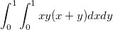

Origin/OriginProには、「NAG Mark 9」数値ライブラリ完全版が搭載されています。このライブラリを使って、複数の手法で数値積分することができます。全ての関数は、Origin Cからアクセスできます。このチュートリアルでは、NAG関数を呼び出して、二重積分を実行します。ここでは、有限NAG統合を使用します。
このチュートリアルでは、以下の項目について解説します。
二重積分を計算するには、NAGライブラリカテゴリーD01 Quadratureの関数を呼び出す必要があります。このカテゴリーには、一次元以上の定積分の数値計算評価を行う関数があります。nag_multid_quad_adapt_1とnag_multid_quad_monte_carlo_1は、異なるアルゴリズムによる二重積分関数で、これら2種類の利用が可能です。このチュートリアルでは、これらを使って、以下の積分を解く方法を学びます。

以下のコードの実行とテストの方法については、関連しているチュートリアルOrigin CからNAG関数を呼び出すをご覧ください。コードをコピーして、コードビルダにある新しく作成した「.cファイル」に貼り付けてから、コンパイルとビルドを行います。コメント付Origin Cのコードを以下に示します。
#include <Origin.h> #include <OC_nag.h> #define MAXCLS 20000 //積分評価可能な最大数 double NAG_CALL f(Integer ndim, double x[], Nag_User *comm) { return x[0]*x[1]*(x[0]+x[1]); //関数式の定義 } int multid_quad_monte_carlo() { Integer exit_status = 0, k, maxcls = MAXCLS, mincls; Integer ndim =2; // 積分の次元数 NagError fail; Nag_MCMethod method; Nag_Start cont; Nag_User comm; double a[2], b[2], acc, *comm_arr, eps, finest; comm_arr=NULL; if (ndim < 1){ printf("Invalid ndim.\n"); exit_status = -1; return exit_status; } for (k = 0; k < ndim; k++){ a[k] = 0.0; // 積分の下限 b[k] = 1.0; // 積分の上限 } eps = 0.01; //相対精度 mincls = 1000; //積分評価の最小数 method = Nag_ManyIterations; cont = Nag_Cold; /* nag_multid_quad_monte_carlo_1 (d01xbc). * Multi-dimensional quadrature, using Monte Carlo method, * thread-safe */ nag_multid_quad_monte_carlo_1(ndim, f, method, cont, a, b, &mincls, maxcls,eps, &finest, &acc, &comm_arr, &comm, &fail); if (fail.code == NE_NOERROR || fail.code == NE_QUAD_MAX_INTEGRAND_EVAL){ if (fail.code == NE_QUAD_MAX_INTEGRAND_EVAL){ printf("Error from nag_multid_quad_monte_carlo_1 (d01xbc).\n%s\n",fail.message); exit_status = 2; } //計算結果の出力 printf("Requested accuracy = %7.2e\n", eps); printf("Estimated value = %7.5f\n", finest); printf("Estimated accuracy = %7.2e\n", acc); printf("Number of evaluations = %6d\n", mincls); } else{ printf("Error from nag_multid_quad_monte_carlo_1 (d01xbc).\n%s\n",fail.message); exit_status = 1; } /* 内部に割り当てられたメモリの解放 */ if (comm_arr) NAG_FREE(comm_arr); return exit_status; }
次に、LabTalkコンソールの関数を呼び出すと、以下のようになります。
Requested accuracy = 1.00e-002 Estimated value = 0.33326 Estimated accuracy = 2.23e-004 Number of evaluations = 1552
#include <OC_nag.h> #include <Origin.h> #define NDIM 2 //積分次元数 #define MAXPTS 1000*NDIM //積分評価の最大数 double NAG_CALL f(Integer n, double x[], Nag_User *comm) { return x[0]*x[1]*(x[0]+x[1]); //関数式の定義 } int multid_quad_adapt() { Integer exit_status = 0; Integer ndim = NDIM; Integer maxpts = MAXPTS; double a[2], b[2]; Integer k; double finval; Integer minpts; double acc, eps; Nag_User comm; NagError fail; for (k = 0; k < 2; k++) { a[k] = 0.0; //積分の下限 b[k] = 1.0; //積分の上限 } eps = 0.001; minpts = 0; nag_multid_quad_adapt_1(ndim, f, a, b, &minpts, maxpts, eps, &finval,&acc, &comm, &fail); if (fail.code != NE_NOERROR && fail.code != NE_QUAD_MAX_INTEGRAND_EVAL) { printf("Error from nag_multid_quad_monte_carlo_1 (d01xbc).\n%s\n",fail.message); exit_status = 1; return exit_status; } //計算結果の出力 printf("Requested accuracy = %7.2e\n", eps); printf("Estimated value = %7.5f\n", finval); printf("Estimated accuracy = %7.2e\n", acc); return 0; }
次に、LabTalkコンソールの関数を呼び出すと、次のようになります。
Requested accuracy = 1.00e-003 Estimated value = 0.33333 Estimated accuracy = 3.33e-016